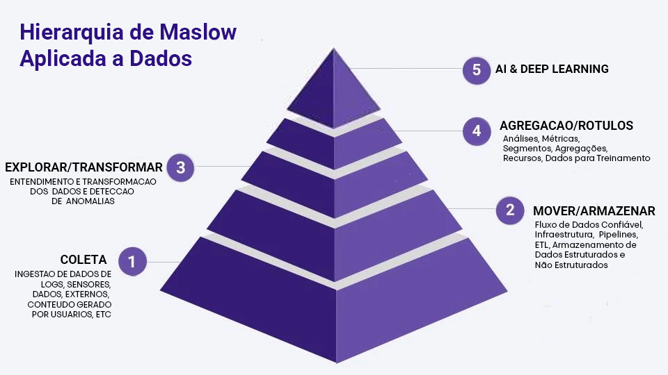

Introdução
Nos dias de hoje, as empresas estão imersas em um mar de informações. Com a evolução da tecnologia e a digitalização dos processos, a quantidade de dados gerados diariamente é imensa. É nesse contexto que surge o conceito de Big Data. Este termo refere-se a conjuntos de dados vastos e complexos que não podem ser analisados por métodos tradicionais. A capacidade de coletar, armazenar, analisar e disponibilizar esses dados tornou-se uma vantagem competitiva crucial para as organizações que buscam entender melhor seu mercado, clientes e operações.
Modern Data Team
- Engenharia de Dados: Foca na construção e manutenção de sistemas e infraestruturas para coletar, armazenar e processar grandes volumes de dados. Engenheiros de dados trabalham com tecnologias como data lakes, data warehouses e pipelines de dados.
- Análise de Dados: Envolve a exploração e interpretação de dados para extrair insights úteis para o negócio. Analistas de dados usam ferramentas estatísticas e de visualização para transformar dados brutos em informações acionáveis.
- Ciência de Dados: Combina habilidades de programação, algoritmos matemáticos e conhecimento de domínio para criar modelos preditivos e descritivos. Cientistas de dados utilizam aprendizado de máquina e inteligência artificial para identificar padrões complexos nos dados e gerar insights acionáveis
- MLOps: Integra algoritmos matemáticos com habilidades de programação e práticas de DevOps para operacionalizar modelos de aprendizado de máquina. Profissionais de MLOps automatizam o ciclo de vida dos modelos, garantindo sua implantação, monitoramento, versionamento e escalabilidade em produção, com foco em performance, confiabilidade e governança.
Estes três campos trabalham em conjunto para transformar grandes volumes de dados em valor para as organizações, permitindo uma tomada de decisão mais informada e estratégica.
5 V’s de Big Data
Os 5 V’s de Big Data são o fundamento da tecnologia. Neles circulam os principais desafios e
oportunidades que a análise de grandes volumes de dados pode proporcionar para a melhoria da
visualização e dos processos decisórios. 🚀
Variedade
A variedade do Big Data vem principalmente das suas diversas fontes, o que garante aos dados formatos variados, estruturas distintas e até mesmo informações diferentes que cada um deles oferece. Tratando-se das fontes, por exemplo:
- Bancos de dados;
- E-mails;
- Cookies de sites;
- Internet Of Things
Tudo isso são fontes para Big Data e traduzem a variedade que esses dados podem ter. Além de diversidade das fontes, os dados do Big Data também variam de acordo com a natureza do arquivo, como imagens, vídeos, textos, entre inúmeros outros formatos. Tudo isso são dados a serem analisados por profissionais e empresas especialistas no assunto.
Velocidade
A velocidade é o principal limitador de acesso à tecnologia de Big Data. Essa é a razão que faz com que essa tecnologia seja acessível a pouquíssimas pessoas.
Os dados disponíveis são tantos, e muitas vezes tão complexos, que é preciso muita velocidade de processamento para conseguir extrair informação útil deles.
Veracidade
A veracidade é a real procedência dessas informações e ditam se são confiáveis ou não. Como a variedade desses dados é cada vez maior, essa preocupação está se provando relevante.
Volume
Big Data só faz sentido porque é extremamente volumoso. Hoje a quantidade de dados armazenados na internet chega a 4,4 Zettabytes, que são equivalentes a 44 trilhões de Gigabytes, um número até difícil de compreender.
E nada indica que a produção de dados irá desacelerar nos próximos anos. Ao contrário, a cada segundo a humanidade produz pelo menos mais um byte de dado a ser acrescentado nesse montante. Essa é mais uma razão para que o Big Data seja tão complexo, pois, por mais que existam informações de qualidade escondidas nos dados, é preciso saber encontrá-las e separá-las de dados irrelevantes para determinadas empresas.
Valor
Hoje a internet está com tanto dado acumulado que, por mais que neles se escondam informações preciosíssimas, como um diamante em uma mina, para encontrá-los é necessário dispensar uma série de dados “inúteis”.
Claro, talvez para um mercado ou nicho específico cada dado tenha seu valor. Mas em muitos casos, quando esse serviço é oferecido para uma empresa específica a maior parte dos dados é irrelevante e é necessário organizar aqueles que são importantes e separá-los para serem lidos e utilizados.
Data Lake x Data WareHouse x Data LakeHouse

1. Data Lake: A Piscina de Bolinhas Variadas
- Imagine o Data Lake como uma grande piscina de bolinhas onde diferentes cores representam diferentes tipos de dados. Cada cor de bolinha indica um formato de dado específico:
- Bolinhas Azuis: Dados estruturados, em formato tabular
- Bolinhas Vermelhas: Dados semi-estruturados, como JSONs e XMLs.
- Bolinhas Amarelas: Dados não estruturados, como imagens, vídeos e textos brutos.
- Bolinhas Verdes: Logs de sistemas e dados em tempo real que entram constantemente.
- No Data Lake, todas essas bolinhas ficam juntas, sem organização específica. Isso oferece flexibilidade para armazenar qualquer tipo de dado sem a necessidade de transformá-lo antes. É uma solução ideal para armazenar grandes volumes de dados, permitindo que sejam acessados para processamento posteriormente.
- Pontos positivos: Baixo custo e alta escalabilidade.
- Desafios: Dificuldade em buscar e analisar rapidamente, já que as bolinhas estão desorganizadas e os dados podem se tornar um "Data Swamp" se não forem bem gerenciados.
2. Data Warehouse: A Sala de Bolinhas Organizadas
- O Data Warehouse é como uma sala onde as bolinhas são organizadas em compartimentos específicos:
- Bolinhas Azuis (Dados estruturados) são colocadas em compartimentos próprios, prontas para consultas rápidas.
- Bolinhas Vermelhas (Dados semi-estruturados) são transformadas antes de serem guardadas, para que fiquem consistentes com o formato dos dados da sala.
- Bolinhas Amarelas e Verdes (Dados não estruturados) podem ser ajustadas para que encaixem, ou até deixadas de fora se não tiverem utilidade para o propósito da sala.
- Cada dado passa por um processo de transformação e estruturação antes de entrar no Data Warehouse. Isso garante que as consultas e os relatórios sejam rápidos e eficientes, pois os dados já estão organizados.
- Pontos positivos: Alto desempenho em consultas e análises padronizadas; dados são consistentes e organizados.
- Desafios: Menos flexível e mais caro; limita o armazenamento de dados não estruturados e semi-estruturados.
3. Data Lakehouse: A Piscina Organizada e Flexível
- O Data Lakehouse é como uma piscina de bolinhas que une o melhor dos dois mundos: tem áreas desorganizadas como o Data Lake e áreas organizadas como o Data Warehouse:
- Na área desorganizada, bolinhas de todas as cores podem ser jogadas sem passar por processos de transformação, como no Data Lake.
- Na área organizada, as bolinhas são separadas por cores e tipos, prontas para consultas rápidas, como no Data Warehouse.
- Ferramentas avançadas permitem mover rapidamente as bolinhas entre essas áreas, facilitando a análise rápida de dados, mesmo para aqueles que estão inicialmente na parte desorganizada.
-
O Data Lakehouse, então, oferece flexibilidade para armazenar dados variados e ferramentas que otimizam o acesso e organização dos dados para análise, eliminando a necessidade de duplicar dados entre sistemas.
-
Pontos positivos: Combina flexibilidade e desempenho; reduz custos e elimina a duplicação de dados.
- Desafios: Como tecnologia mais nova, pode exigir uma infraestrutura mais avançada e uma gestão de dados sofisticada para funcionar de maneira eficaz.
Hierarquia de Maslow Aplicada a Dados
A Hierarquia de Maslow Aplicada a Dados é um modelo que adapta o conceito clássico da Pirâmide de Maslow ao contexto de ciência de dados, demonstrando as etapas essenciais para a maturidade no gerenciamento e uso de dados em organizações. A pirâmide apresenta cinco níveis hierárquicos, cada um representando um estágio de evolução no uso e exploração de dados.

1. Coleta
Base da pirâmide: Ingestão de Dados
Este é o primeiro passo, onde os dados são coletados a partir de diversas fontes, como logs, sensores, dados externos e conteúdo gerado por usuários. Esse processo é essencial para a criação de um fluxo contínuo de informações e para garantir que as organizações tenham acesso aos dados necessários para análise e tomada de decisão.
- Fontes de dados: sensores, logs, APIs, bancos de dados externos, etc.
- Objetivo: Capturar dados de maneira confiável e em escala.
2. Mover/Armazenar
Infraestrutura e Fluxo de Dados
Após a coleta, os dados precisam ser transportados e armazenados de maneira eficiente. Este nível envolve a construção de pipelines robustos, processos de ETL (Extração, Transformação e Carga) e a criação de infraestruturas que suportem tanto dados estruturados quanto não estruturados.
- Componentes: pipelines, sistemas de armazenamento (Data Warehouses e Data Lakes), segurança de dados.
- Objetivo: Garantir que os dados estejam disponíveis e organizados para uso futuro.
3. Explorar/Transformar
Entendimento e Transformação de Dados
Neste estágio, os dados brutos são processados e transformados em informações úteis. Ferramentas analíticas e técnicas de detecção de anomalias ajudam as organizações a entenderem melhor os dados e a extraírem insights relevantes.
- Atividades: limpeza de dados, exploração, análise descritiva.
- Objetivo: Detectar padrões e preparar os dados para análises mais avançadas.
4. Agregação/Rótulos
Análises e Preparação de Dados para Treinamento
Os dados passam a ser agregados, rotulados e preparados para uso em modelos mais complexos. Aqui, métricas e recursos são criados para alimentar análises preditivas e algoritmos de aprendizado de máquina.
- Componentes: criação de segmentos, métricas, agregações, rótulos.
- Objetivo: Estruturar os dados para análises avançadas e Machine Learning.
5. AI & Deep Learning
Topo da Pirâmide: Inteligência Artificial
No estágio mais avançado, os dados são usados para alimentar sistemas de inteligência artificial e aprendizado profundo (Deep Learning). Essa etapa representa o uso mais sofisticado dos dados, onde a tecnologia é empregada para criar modelos preditivos e prescritivos de alta complexidade.
- Aplicações: redes neurais, algoritmos de IA, automação de decisões.
- Objetivo: Maximizar o valor dos dados para criar vantagens competitivas.
A Hierarquia de Maslow Aplicada a Dados fornece uma visão clara do caminho que as organizações devem percorrer para evoluir no uso de dados. Cada nível é essencial para o próximo, e o sucesso no topo depende de uma base sólida construída nos níveis inferiores